How Success Works Water Warriors: Rainwater Harvesting to Replenish Underground Water (Rajasthan, India)
- Prepared by: Gerry Marten and Julie Marten
- Return to main How Success Works page
- View detailed description of this case
Downloads
- Download all lesson materials (ZIP; editable Microsoft Word and PowerPoint files).
Lesson Contents:
- Suggested Procedure (Lesson Plan)
- Narrative Handout (Short Version)
- Narrative Handout (Extended Version)
- Ingredients for Success Handout (Short Version)
- Ingredients for Success Handout (Extended Version)
- Ingredient for Success (Student Worksheet)
- Ingredients for Success (Teacher Key)
- Feedback Diagrams (Student Worksheet)
- Feedback Diagrams (Teacher Key)
- Ingredients for Success PowerPoint (Preview)
- Student-Centered How Success Works PowerPoint (Preview)
- Video (View and Download)
1. Suggested Procedures for “How Success Works” Lessons
- Prepared by Gerry Marten and Julie Marten (EcoTipping Points Project)
The lesson plan below provides a full menu for use from primary school to high school. Depending on the grade level and the unit of study that provides the context for a lesson, teachers can pick and choose from the steps below, tailoring the style of the lesson to the circumstances and changing the order of some of the steps if they wish. For example, if a lesson emphasizes “systems thinking,” it might proceed directly from a video or narrative handout (Steps 3-4) to feedback diagrams for that success story (Steps 8-9), and then create a “negative tip” feedback diagram for an issue that students identify from their local scene (Step 11), covering Ingredients for Success (Steps 5-7) later if desired. A very simple lesson, appropriate for primary school, might proceed directly from a story (Step 3 or 4), and reviewing the story, to exploring briefly what might be done about a local problem.
Step 1
Have students write a journal responding to the following prompt:
“Think of a time when something you or your family cared about was falling apart, or falling into decline (You can give examples: friendships, a project, a class, a job…) What did you do to try to turn things around? Did it work? How or how not? Do you think doing something else might have worked better?”
Step 2
After students have written their journals and shared back with the class, introduce the idea of communities being in decline, or falling apart, because of their relationship with their environment. Explain how these communities must change in order to sustain themselves, but knowing what to change is rarely clear or simple. Tell students that you will use the experience of a community that turned things around, from decline to restoration and sustainability, to learn lessons about what it takes to achieve that kind of success.
Step 3
Show a short video on one of the success stories to quickly introduce students to the basic concept of EcoTipping Points. The Apo Island case is a good choice to start. It is a compelling story with a simplicity that clearly reveals the basic concept. An effective way to introduce the video is to briefly:
- Explain the story setting and what will happen during the “negative tip” portion of the video, emphasizing what set decline in motion and what changed during decline.
- Ask students to watch for what the people in the story did to turn things around (what they did first, what they did next, what they did after that, and so on).
After seeing the video, students can work in small groups to list what the people in the story did first to turn things around, what they did next, and so on. The entire class can then go over it together. If the lesson will be continued in further detail, the teacher can tell students now that they understand what an EcoTipping Point is, they will look closely at a success story – perhaps the same as the video or perhaps another story – to identify the ingredients for success in that story and determine how decline was reversed. If the story selected for further study is a new one, the video for that story can be shown at this time, or it can be shown at the end of the lesson to pull the lesson together. The New York City community gardens story is a good one for American classes.
Step 4
A narrative handout can also be used for the selected story. There are two levels of the narrative available: a short version and an extended version, depending on the level of your course. The student worksheet comes with frontloaded vocabulary. Review the vocabulary with them to improve student comprehension and introduce key concepts of human ecology. It may be useful for students to underline those words when they read them. The vocabulary is also useful for assessment.
Step 5
Pass out a copy of the “Ingredients for Success” handout and review the meaning of each ingredient. There are two levels available: a short version and an extended version, depending on the level of your course. They come with frontloaded vocabulary for student comprehension. It may be useful, as you go over each ingredient, to ask students to share real life examples of what that ingredient might look like. This will help them, later, when they try to identify those ingredients in the case studies.
Step 6
Either individually, or in groups, have students read a narrative handout for the story and write bullet points onto their Ingredients for Success worksheet, listing examples of events, actions, or conditions in the story that they associate with each ingredient for success.
Step 7
When students have completed their work, it can be reviewed as a whole class with the teacher-led Ingredients for Success PowerPoint presentation. The PowerPoint presentation has comprehensive bullet-points that can be used as is or modified to meet your needs. On each slide there are also several photographs to help illustrate the information. There are also additional background notes for the instructor on the notes section of each slide, as well as the Ingredients for Success Teacher Key, which describes examples of each ingredient in the selected case. If you prefer to use a PowerPoint without any pre-written notes on the slides as your point of departure, an editable slide show (with photo captions in the notes section but no text on the slides themselves) is available for your use.
Step 8
After students have seen success in action, they can learn systems thinking to understand what drives decline, how turnabouts from decline to restoration work, and what drives restoration. Explain the following ideas:
- Tipping point – A “lever” (i.e., an action that sets dramatic change in motion).
- Negative tip – The downward spiral of decline.
- Negative tipping point – The action or event that sets a negative tip in motion.
- Positive tip – The upward spiral of restoration and sustainability.
- Positive tipping point (also called EcoTipping Point) – The action that sets a positive tip in motion by leveraging the reversal of decline. An EcoTipping Point is typically an “eco-technology” (in the broadest sense of the word, such as the marine sanctuary at Apo Island or community gardens in New York City), combined with the social organization to put that “eco-technology” effectively into use.
Step 9
Pass out a feedback-diagrams worksheet for the students to map out the vicious cycles driving the negative tip in the story, and the virtuous cycles driving the positive tip. There is also a Teacher Key for feedback diagrams with notes for teachers. Fill out the “negative tip” diagram together, noting the negative tipping point, drawing arrows between boxes, and writing the direction of change (increasing or decreasing) in each box. Then, turn to the “positive tip” diagram. After noting the EcoTipping Point as a starting point, let the students fill out the “positive tip” diagram on their own, and review the results as a class. Students should understand that they are not expected to come up with diagrams identical to the Teacher Key. While most of the arrows showing “what affects what” are obvious, others are a matter of interpretation. When students compare their “negative tip” and “positive tip” diagrams, they will discover that:
- One portion of the “positive tip” diagram is identical to the “negative tip” diagram,” except change is in the opposite direction (i.e., transformation of vicious cycles to virtuous cycles).
- The rest of the “positive tip” diagram is new virtuous cycles created by the positive tipping point. Those virtuous cycles help to lock in the gains.
Feedback diagrams look complicated at first glance, because most of us are less accustomed to looking at cause and effect cyclically. But students of all ages catch on very quickly. After you have gone through one worksheet together, most students find it no more difficult to understand than the basic cause and effect diagrams they already know. This diagram is just cyclical instead of linear!
Step 10
While this lesson plan suggests how to teach one success story at a time, the lesson can easily be modified to teach the stories collectively. For instance, small groups could be designated to identify the Ingredients for Success in different stories and then teach the “Ingredients for Success” PowerPoint for their story to the class. Students could jigsaw the stories, or use the Student-Centered How Success Works PowerPoints to explore the cases independently. For each of the How Success Works flagship cases there is an editable PowerPoint slide show containing photos about the story. These PowerPoint files contain no bullet points or other text information on the slides themselves, but in the notes section of each slide there is a caption that briefly describes the photo and its role in the story. These Student-Centered How Success Works slide shows can be used for any level of K-12 and beyond as a base for students to explore and teach a success story within the parameters of their grade level and the teacher’s content focus and desired outcome. Students can build their own presentations for (a) teaching other students about the case, (b) using the photos as background for a creative retelling of the community’s experience, or (c) another task that suits the specificity of your classroom. The notes already in the slides can serve as a guide for students to research additional information from that case’s video, written narratives, “Ingredients for Success” PowerPoint, and feedback diagrams.
Step 11
The same procedures that were applied to investigating EcoTipping Points success stories can be applied to an issue that students identify from their local scene:
- Students think of issues, involving things in decline, and select an issue for EcoTipping Points analysis.
- They prepare a “negative tip” feedback diagram for the issue to clarify what is driving decline.
- They examine their “negative tip” feedback diagram for elements that could be modified to set positive change in motion. They brainstorm possible actions (i.e., EcoTipping Points) for leveraging the change.
- They run through the Ingredients for Success to consider how each ingredient might contribute to making the actions more effective, and they devise additional Ingredients for Success that could be helpful for dealing effectively with their issue.
As with lessons built around EcoTipping Point success stories, it is not necessary for students to follow all of the steps above when exploring a local issue. They can focus on feedback diagrams, Ingredients for Success, or both.
2. Narrative Handout (Short Version)
Rajasthan’s Water Warriors: Rainwater Harvesting to Replenish Underground Water
In Rajasthan, India, water has always been scarce and rain falls almost only during the monsoon season (July-September). But over the millennia, farmers used rainwater harvesting to get the most out of every drop. They constructed and maintained johads, earthen dams to trap the monsoon rains. Water from the ponds behind the dams seeped into the aquifer below, where it was protected from being lost to evaporation under the hot sun. The underground water recharged rivers and wells, providing enough of the precious liquid to sustain villagers, animals, and crops such as wheat, beans, and mustard throughout the year.
The delicate balance was upset in the 1940s, when commercial logging set off a slow-motion chain reaction. Monsoon rains washed topsoil down deforested slopes, depositing silt into johad ponds, reducing the amount of water they could hold and the amount of rainwater they channeled underground. The water table began to drop, and villagers dealt with the problem by using the new “tube well” technology recently introduced to the region – powerful drills to dig deeper wells and pumps to bring the water up. If there was not enough water in a well, they just dug the well deeper. They didn’t bother to maintain the johads, which gradually filled in with silt.
However, the underground water eventually began to run out. Streams and wells started to go dry, and people were thrown into a vicious cycle of deeper wells, pumping up as much water as they could, and reducing the underground water even further. Soon all the wells were dry over an area of several thousand square kilometers. Village trees that provided essential firewood for cooking were gone because those trees depended on the underground water. Cattle and goat herds declined and wildlife such as antelope and leopards disappeared. The wells were not providing irrigation water for year-round farming, so men started migrating to cities to find work to support their families. Women and children had to walk up to 10 hours a day carrying firewood and water from distant sources for household use. With the community falling apart, there was neither the will nor the manpower to keep up the remaining johads, which filled in with silt.
The vicious cycle began to turn around in 1985 when an anti-poverty group, called Tarun Bharat Sangh (TBS), came to the village of Gopalpura to build a clinic but quickly realized that the most urgent need was water. Village elders remembered how the johads were built and cared for, and on their advice TBS and some of the villagers began to dig the silt out of one johad. It took seven months to reconstruct that johad, but when the monsoon rains came, a pond formed behind the dam and within a few more months a nearby well, long dry, began flowing again.
Then Gopalpura started up its traditional village council, which had fallen into neglect during the preceding years. Every family in the village participated in community decisions made by consensus. The village council united around managing their water, and the next year the whole village joined in the work of rebuilding a second dam. They built more dams during the following years, and by 1996 they had nine johads holding 162 million gallons of water. Every well in the village was full, even during the dry season.
The community’s pride in its success became a symbol for the community’s ability to manage its destiny. Most important, it gave the village council the courage to try reviving and managing their forest as well. Villagers replanted their forest and set strict conservation rules. To remind themselves of their commitment to the trees, villagers tied colorful rachis, or kinship bracelets, around the trunks, a symbol of family protection. Families could break off dead branches for firewood, but were fined for cutting living ones. Restoring the forest protected the watershed, reducing soil erosion and silt going into johads. This made the johads easier to maintain and helped to build up the underground water even more.
The results of managing their water and forest were dramatic. They could irrigate their crops and raise their livestock again. Rivers came back to life and wildlife returned. Now that there was enough water for year-round farming, the men could stop working in cities and return to the village, and with their return the community support system became stronger and there were more people to work on building and maintaining their life-saving johads. With an ample water supply, the farmers were able to diversify their agriculture to include additional crops such as sugar cane, potatoes, and onions. And with water and firewood just a short walk away from their homes, women had time to return to their housework, and inspired by the positive changes, started cooperatives selling milk products, handicrafts, and soap. Children had time to go to school.
The success of resurrecting johads in Gopalpura inspired other villages to do the same! With organizational and engineering assistance from TBS, over 750 villages have followed the example of returning to traditional rainwater harvesting, using their own manpower and financial resources to do it. These villages faced challenges that went beyond hard work and commitment. The government tried to sell away the fishing rights to their newly restored rivers, illegal miners poisoned their underground water, and the government even tried to tear down some of their dams because they were infringing on government authority over underground water. In response, villagers created the “Water Warriors of Rajasthan,” and turned the pride of their success into the strength and solidarity needed to defend their resources through sit-ins, lawsuits, and other nonviolent actions – and they were successful! The villagers of Rajasthan found that they did not have to become victims of collapse if the community chose to tip the balance in a positive direction.
3. Narrative Handout (Extended Version)
Rajasthan’s Water Warriors: Rainwater Harvesting to Replenish Underground Water
- Authors: Gerry Marten and Amanda Suutari
- See the detailed source document on which this article is based
The wells in Rajasthan’s Alwar District had dried up, thrusting the people into abject and seemingly inescapable poverty. The revival of traditional earthen dams to capture rainwater for recharging the underground water supply provided a tipping point that brought the wells back to life. And with the water came a better life for the people. It started in the spare, humble village of Gopalpura. Nearly a thousand villages are now following Gopalpura’s example.
Water has always been scarce in the Alwar District of Rajasthan, India. A scant average of 40 centimeters of rain falls each year, most of it during the three months of the monsoon (July to September), leaving the soil to parch the rest of the year. But over the millennia, farmers learned to get the most out of every drop. Ancient Hindu scriptures mention the key technology for managing water: rainwater harvesting. All over India, people built structures to catch and hold the monsoon rains and store them for the dry season. Archeologists have dated some rainwater catchments as far back as 1500 B.C.
In Rajasthan, the dominant structure was the johad, a crescent-shaped dam of earth and rocks, built to intercept rainwater flowing down a slope. A johad served two functions. On the surface, it held water for livestock. But like an iceberg, its most important parts were below the surface. By holding water in place, it allowed the liquid to percolate down through the soil. It recharged the aquifer below, as far as a kilometer from the johad. Stored underground, the water did not evaporate. Without pipes or ditches to deliver it, villagers could always count on dipping water from their wells. Irrigation made crops possible during the dry season.
A johad was more than any one family could build. But because every villager had a stake in the johads, they banded together to build and maintain them. The rajas, the kings of small states who gave the region its name, would often finance construction of johads in return for a small percentage of the harvest. Local community institutions extended to other shared resources such as trees. Villagers regulated the cutting of trees for firewood.
Sucking the aquifer dry
After centuries of relative stability, the social contract around water and trees began to erode when Great Britain consolidated its control over India in the late 19th century. British companies were hungry for timber, and too many rajas were willing to provide it. First, they declared the forests off-limits to the villagers who had tended them for generations. Later on, they sold logging rights to the companies. Alwar District kept its forests until the late 1940s, when India was gaining its independence and the local raja, afraid of losing his lands to the new national government, let the loggers in. The venerable trees turned into railroad ties and charcoal.
This commercial logging set off a slow-motion chain reaction in which the ruin of one resource led to the ruin of others, and the impoverishment of nature led to impoverishment of the people. First of all, topsoil washed down steep treeless slopes and silted up the johads. In earlier times, villagers might have dug out the silt and rebuilt their crumbling dams. But as the government seized more and more of their common lands, they had less and less incentive to protect what was left. Traditional village councils with participation from every family, called gram sabhas, fell apart and a tradition of communal labor faded away. Where farmers had once banded together to manage their resources, now they competed over the dwindling remains. “After independence,” recalls Gopalpura village elder Mangu Patel, “village unity collapsed, and the people neglected their [johad] structures, because they can only be made by a group, not by individuals. So, one by one, all the structures gradually deteriorated and stopped being used.”
With fewer johads to refill the aquifer, wells began to run dry. But demise of the johad seemed of little consequence once drilling and pumping equipment for tube wells were introduced to the region in the 1950s. If a well dried up due to a falling water table (i.e., top of the underground water), it was only necessary to dig the well deeper. This was easily done with the new drilling equipment and was immensely less work than removing sediment from johads to keep them in working order.
Vicious cycles sped up the loss of johads and decline of the aquifer. Tube wells bored deeper and sucked out more underground water. The water table dropped further, requiring even deeper wells. Retreating underground water led to a decline in trees and other vegetation whose roots depended on reaching underground water, and still more erosion which filled remaining johad with sediment. Less vegetation meant less transpiration from plants, which meant less rain. Monsoon seasons became shorter, from 101 days in 1973 to 55 days in 1987. Eventually, all of the wells, and even the streams and rivers, dried up over an area of several thousand square kilometers. Livestock such as goats and cattle declined, and antelope, leopards, and other wildlife so characteristic of the region virtually disappeared.
Wells no longer provided irrigation water for the dry-season crop, and farming was reduced to one crop per year, during the rainy season. Men migrated to cities for work, reducing the labor available to maintain johads. Because the wells were dry and trees were gone, women and children had to walk long distances, spending up to 10 hours a day fetching firewood and water and leaving little time for education or other pursuits.
Turning decline to restoration
The johad had gone out of use in Golpapura village by 1985, when five young volunteers arrived there from an anti-poverty group called Tarun Bharat Sangh (TBS). One of them, a doctor named Rajendra Singh, was hoping to start a health clinic. But Mangu Patel told him the immediate need was for water. On Patel’s suggestion, Singh and his colleagues began digging out a defunct johad pond. Seven months later, it was nearly five meters deep. When the monsoon rains came, not only did the pond fill to the brim, but a nearby well, long dry, began flowing again.
The next year, the whole village joined in to rebuild a crumbling irrigation dam, 20 feet high and 1,400 feet long. Although Golpapura already had a village council (pancharat) under India’s modern political system, the villagers revived the traditional gram sabah council to manage the construction and maintenance of johads because a gram sabah’s total village participation was most appropriate for this purpose. TBS helped to obtain the necessary technical assistance, the villagers contributed a total of 10,000 person-days of labor, and wealthier villagers donated food for the workers.
By 1996, Golpapura had recreated nine johads, covering 964 hectares and holding up to 616 million liters of water. Their underground water had risen from an average of 14 meters below the ground to 6.7 meters. The village wells were full again. “It’s like a bank,” says Rajendra Singh. “If you make regular deposits, then you’ll always have money to withdraw. If you are just taking, then you’ll have no money in your bank account.” On government maps, the area changed from a dark zone to a white one, indicating a surplus of underground water.
The ascending water table trickled up through the village economy. Moister subsoil allowed crops to thrive with less irrigation, and restored wells provided the irrigation that was needed. Because well levels were higher, less fuel was needed to pump water to the surface. The expense of diesel fuel dropped 75 percent. The area of wheat fields jumped from 33 to 108 hectares, and some farmers diversified into sugarcane, potatoes and onions. Villagers returned home from cities. As people ate and drank better, so did their livestock. There were more leftover leaves and stems to serve as fodder for sheep, goats and dairy cows, which led to an increase in dairy products.
The restoration of Golpapura’s johads demonstrates how the right “lever” – the right catalytic action – can transform a vicious cycle into a “virtuous cycle.” After years of taking too much water out of the ground, farmers began to put it back. The virtuous cycles that followed were mirror images of the vicious cycles that came before:
- As their wells revived, villagers were encouraged to build more johads, bringing still more wells back to life.
- Higher underground water sustained the trees and other vegetation that prevent erosion, thereby helping to protect the johads from filling in with sediment.
- As people returned to the villages, more labor was on hand to construct and maintain new johads.
- The rewards of united action made village social institutions stronger, which inspired more community action.
Spinoffs to lock in the benefits
With water and firewood just a short walk away, women had time to start cooperatives, selling milk products, handicrafts, and soap. Children had time to go to school. “Now, there are two schools,” says female elder Manbhar Devi of nearby Bhaonta-Kolyala, “for small children and older children as well. At that time [before rainwater harvesting], not a single girl went to school. Their parents didn’t let them go to school. Now every family sends both boys and girls to school, and at least they can finish their primary education here in this village.”
Encouraged by success, the gram sabha council decided to reforest 10 hectares of land along the edge of Golpapura village and set strict conservation rules for use. Families could break off dead limbs for firewood, but were fined for cutting living ones. To underscore their commitment to the trees, villagers tied colorful rakhis, or kinship bracelets, around their trunks, a symbol of family protection.
As other villages witnessed Gopalpura’s rebirth, they sought TBS’s help to restore their own rainwater harvesting structures. TBS provided organizational and technical assistance, but only after first entering into a strict contract with each village with regard to money and labor that villagers would contribute to the enterprise to ensure its success. By 2005, there were 5,000 johads in 750 villages, over an area of 8,000 square kilometers. A survey of 970 wells found all of them flowing—including 800 that had been empty just six years before. Alwar District’s forest cover had spread 33 percent in 15 years, and five dried-up rivers came back to life, resurrecting habitats for rarely seen animals like antelopes and leopards.
Most important, Alwar’s farmers organized to protect their hard-won resources. Because underground water and forests in India are under the authority of state and national governments, TBS and village leaders were threatened with arrest and imprisonment for “taking the law into their own hands” with their water and forest management. But the villagers persevered. When state officials tried to cut down village forests or tear down their johad in a display of government authority, villagers forced them to back down, sometimes by sitting-in at the sites. When the state sold commercial fishing rights to the reborn Arvari River, 70 villages united to get fishing rights returned to the people. Residents of the Sariska Tiger Reserve successfully sued to drive out the “marble mafia,” whose illegal mines drained and poisoned their underground water.
TBS volunteer Maulik Sisotia summed up how genuine community participation can propel environmental and social restoration that is truly sustainable: “The people feel, ‘We have given our work to this, so this is ours.’ So they maintain it regularly, and they have a feeling of ownership. It’s natural. If you participate in something, then you are very caring about it, so it should not be damaged.”
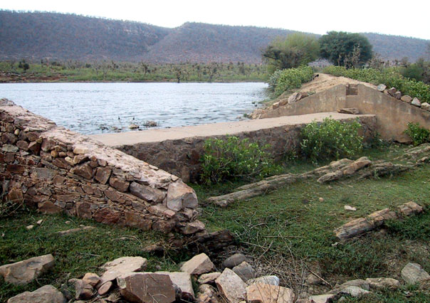
Rainwater harvesting in Rajasthan. A johad is a dam that collects rainwater to channel it into the ground to replenish the supply of underground water.

A wheat field, irrigated during the dry season.
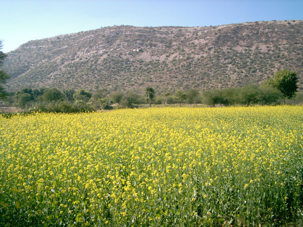
A mustard field, irrigated during the dry season. Mustard production is a major source of income for Rajasthan’s farmers.

Restored village forests provide firewood close to home. The firewood is used primarily for cooking.

Local transportation.

Gram sabah (traditional village council) meeting.

A village elder who provided guidance for reconstructing the johads in Golpapura.

A johad in Golpapura village during the dry season. Part of the village forest is in the background
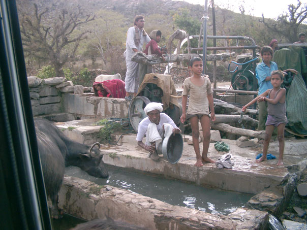
A well in Golpapura village provides water for crop irrigation, livestock, and washing clothes.
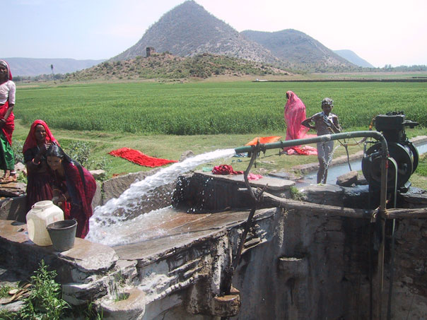
A village well. The ditch at the right of the photo transports water to irrigate the wheat field in the background. You can see how dry the land is beyond the wheat field, where there is no irrigation.
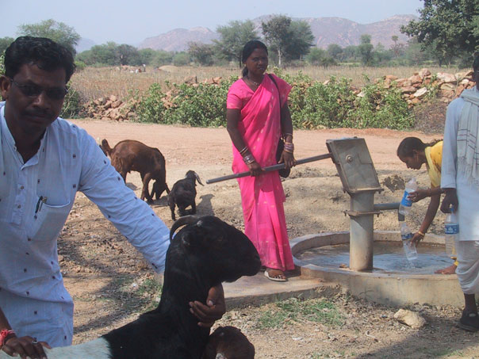
A well provides drinking water for people and livestock.
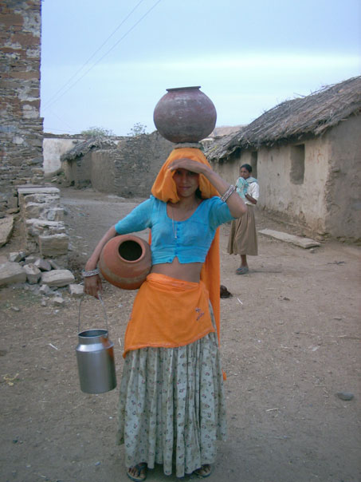
A Golpapura woman walks to a nearby well to fetch water.
4. Ingredients for Success in EcoTipping Point Case Studies (Short Handout)
Shared community awareness and commitment.
Strong democratic institutions and genuine community participation are prominent in EcoTipping Point stories. The community moves forward with its own decisions, manpower, and financial resources, so everyone feels a sense of ownership for community action.
Outside stimulation and facilitation.
Outsiders can be a source of fresh ideas and encouragement. A success story typically begins when people or information from outside a community stimulate a shared awareness about a problem and introduce game-changing ideas for dealing with it.
Enduring commitment of local leadership.
Trusted and persistent leaders inspire the deep-rooted and continuing community commitment and participation necessary to reverse the vicious cycles driving decline.
Co-adaptation between social system and ecosystem.
Social system and ecosystem fit together, functioning as a sustainable whole. When one gains, so does the other.
"Letting nature do the work."
EcoTipping Points create the conditions for an ecosystem to restore itself by drawing on nature's healing powers.
Rapid results.
Quick "payback" and something that can stand as a symbol of success help communities stay committed to change.
Key Symbol.
Something that serves as inspiration or stands for success in a way that helps communities stay committed to change.
Overcoming social obstacles.
Overcoming social, political, and economic obstacles that could block positive change.
Social and ecological diversity.
Greater diversity of people, ideas, experiences, and environmental technologies provide more choices and opportunities, and therefore better chances that some of the choices will be good.
Social and ecological memory.
Learning from the past adds to diversity and often points to choices that were once sustainable. Ecosystems contain "memory" of nature's design for sustainability.
Building resilience.
"Locking in" sustainability by creating the ability to adapt and deal with new (and often unexpected) conditions that threaten sustainability.
Vocabulary
- Stimulation: To excite activity or growth.
- Social System: Everything about a human society, including its organization, knowledge, technology, language, culture, and values.
- Ecosystem: All the living things (plants, animals, microorganisms) and their environment at a particular place.
- Restoration: A return of something to its original, unharmed condition.
- Facilitation: Helping to make something easier or happen successfully.
- Institution: An established pattern of behavior or relationships in a particular society.
- Co-adaptation: Two or more things adjusting to each other and fitting together so they function well.
- Obstacles: The people, things, or events that can block our way.
- Diversity: Variety (many things different from each other).
- Resilience: The ability to return to an original form after severe stress or disturbance.
5. Ingredients for Success in EcoTipping Point Case Studies (Extended Handout)
What does it take to turn around the vicious cycles driving environmental decline? Basically, it takes appropriate environmental technology combined with the social organization to put it effectively into use. More specifically, EcoTipping Point case studies have consistently shown that the following ingredients are keys to success.
Shared community awareness and commitment.
Strong democratic institutions and genuine community participation are prominent in EcoTipping Point stories. These stories do not typically feature top-down regulation or elaborate development plans with unrealistic goals. Of particular importance is a shared understanding of the problem and what to do about it: Shared recognition of why the problem has occurred, shared vision and knowledge of what can be done to set a turnabout in motion, and shared ownership of the community action that follows. The community devises an effective procedure for making this shared understanding a reality. It draws upon its collective experience and moves forward with its own decisions, manpower, and financial resources.
Outside stimulation and facilitation.
We seldom see EcoTipping points "bubble up from within." Outsiders can be a source of fresh ideas and encouragement. While action at the local level is essential, a success story typically begins when people or information from outside a community stimulate a shared awareness about a problem and introduce game-changing ideas for dealing with it. EcoTipping Point success stories will become more common only with explicit programs to provide this kind of stimulation to local communities.
Enduring commitment of local leadership.
Persistence is a key to success. A turnabout from decline to restoration seldom comes easily. It requires community commitment to apply an EcoTipping Points lever with sufficient force to reverse the vicious cycles driving decline. Trusted and persistent leaders inspire the deep-rooted and continuing community commitment and participation necessary for success.
Co-adaption between social system and ecosystem.
Social system and ecosystem fit together, functioning as a sustainable whole. As an EcoTipping Point story unfolds, perceptions, values, knowledge, technology, social organization, and social institutions all evolve in a way that enhances the sustainability of valuable social and ecological resources. Social and environmental gains go hand in hand. "Social commons for environmental commons" are developed, including clear ownership and boundaries, agreement about rules, and enforcement of rules.
"Letting nature do the work."
Micro-managing the world’s environmental problems is far beyond human capacity. EcoTipping Points give nature the opportunity to marshal its self-organizing powers to set restoration in motion.
Rapid results.
Quick "payback" helps to mobilize community commitment. Once positive results begin cascading through the social system and ecosystem, normal social, economic, and political processes took it from there.
A powerful symbol.
It is common for a prominent feature of the local landscape – or some other key aspect of an EcoTipping Point story – to represent the entire process in a way that consolidates community commitment and mobilizes community action to carry it forward.
Overcoming social obstacles.
The larger socio-economic system can present numerous obstacles to success on a local scale. For example:
- It imposes competing demands for people’s attention, energy, and time. People are so "busy," they don’t have time to contribute to the "social commons."
- People who feel threatened by innovation or other change take measures to suppress or nullify the change.
- Outsiders try to take over valuable resources after the resources are restored.
- Dysfunctional dependence on some part of the status quo prevents people from making changes necessary to break away from decline.
Social and ecological diversity.
Greater diversity provides more choices and opportunities – and better prospects that some of the choices will be good. For example, an ecosystem’s species diversity enhances its capacity for self-restoration. Diversity of perceptions, values, knowledge, technology, social organization, and social institutions provide opportunities for better choices.
Social and ecological memory.
Social institutions, knowledge and technology from the past have "stood the test of time" and may have something to offer for the present. Nature’s "memory" exists in the resilience of living organisms and their intricate relationships in the ecosystem, which have emerged from the time-testing process of biological evolution.
Building resilience.
“Resilience" is the ability to continue functioning in the same general way despite occasional and sometimes severe external disturbance. EcoTipping Points are most effective when they not only not only set in motion a course of sustainability, but also enhance the resilience to withstand threats to sustainability. As EcoTipping Point stories play themselves out, new virtuous cycles emerge to reinforce and consolidate the gains. A community’s adaptive capacity – its openness to change based on shared community awareness, prudent experimentation, learning from successes and mistakes, and replicating success – is central to resilience.
Vocabulary
- Stimulation: To excite activity or growth.
- Social System: Everything about a human society, including its organization, knowledge, technology, language, culture, and values.
- Ecosystem: All the living things (plants, animals, microorganisms) and their environment at a particular place.
- Restoration: A return of something to its original, unharmed condition.
- Facilitation: Helping to make something easier or happen successfully.
- Institution: An established pattern of behavior or relationships in a particular society.
- Co-adaptation: Two or more things adjusting to each other and fitting together so they function well.
- Obstacles: The people, things, or events that can block our way.
- Diversity: Variety (many things different from each other).
- Resilience: The ability to return to an original form after severe stress or disturbance.
6. Ingredients for Success: Rajasthan Rainwater Harvesting (Student Worksheet)
Instructions: This worksheet will help you to identify the Ingredients for Success in a real situation. First review the Vocabulary needed for this success story. Second, read the success story, underlining the new vocabulary as you go. Finally, write on your worksheet a bullet-point list of elements in the story that are examples of each ingredient for success. For instance, if someone from another city introduced a new idea or helped get a project going, you could put a phrase or sentence about that under ‘outside stimulation and facilitation.’ Be as SPECIFIC as possible. You should have at least one example for each ingredient, though for some you may have many!
Vocabulary
- Monsoon: The rainy season in southern Asia (typically June or July to September).
- Aquifer: An underground layer of sand, gravel, or porous rock that can hold water and allows the water to flow through it.
- Underground water: Water in an aquifer beneath the surface of the ground. The water gets there by seeping down into the aquifer from the ground surface. Underground water is the source of water for springs and wells.
- Water table: The top of the underground water. The aquifer below the water table is filled with water.
- Dam: A barrier built across a waterway to block the flow of water and raise the water level behind it.
- Evaporation: Change of liquid into a gas. Evaporation is a way that water stored in a pond behind a dam can be lost in a hot, dry place like Rajasthan.
- Replenish: Fill again.
- Consensus: An agreement reached by a group as a whole.
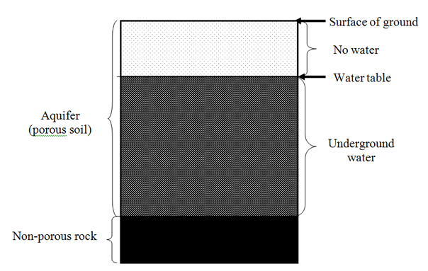
Student Responses
- Shared community awareness and commitment
- Outside stimulation and facilitation
- Enduring commitment of local leadership
- Co-adaption between social system and ecosystem
- “Letting nature do the work”
- Rapid results
- A powerful symbol
- Overcoming social obstacles
- Social and ecological diversity
- Social and ecological memory
- Building resilience
7. Ingredients for Success: Rajasthan Rainwater Harvesting (Teacher Key)
Shared community awareness and commitment.
Strong democratic institutions and genuine community participation are prominent in EcoTipping Point stories. Of particular importance is a shared understanding of the problem and what to do about it, and shared ownership of the action that follows. Communities move forward with their own decisions, manpower, and financial resources. Working only for food, a number of Golpapura villagers joined the team to restore the first johad. The following year, a larger dam was restored by the residents with an estimated 10,000 person-days of labor. Traditional participatory village councils (Gram Sabha), which featured representation from every family and reached decisions by consensus, were revived to manage dam construction. The Gram Sabha also initiated community reforestation projects. These cooperative efforts strengthened village solidarity, which was later crucial for the nonviolent civil disobedience that resisted government efforts to shut down the johads.
Outside stimulation and facilitation.
Outsiders can be a source of fresh ideas. While action at the local level is essential, a success story typically begins when people or information from outside a community stimulate a shared awareness about a problem and introduce game-changing ideas for how to deal with it. Five young men from the group Tarun Bharat Sangh ("Young India Organization") came to the village of Gopalpura intending to set up a health clinic. But they found the greatest need was water and, on the advice of a village elder, began to work on restoring traditional earthen dams (johad) for rainwater catchment and underground water replenishment. They were helped by outside professional engineers.
Enduring commitment of local leadership.
Trusted and persistent leaders inspire the deep-rooted and continuing community commitment and participation necessary for success. Rajendra Singh, one of the five young men from Tarun Bharat Sangh, maintained his role as leader, and Tarun Bharat Sangh has actively facilitated the construction of johads in more villages by hosting thousands of visitors to see what was achieved in Golpapura and insisting on contracts that rigorously specify labor and cash commitments by villages that want Tarun Bharat Sangh to help them build their own johads.
Co-adaption between social system and ecosystem.
Social system and ecosystem fit together, functioning as a sustainable whole. Communities create a "social commons" to fit their "environmental commons." Effects from the rebirth of rainwater harvesting ping-ponged from ecosystem to social system and back, and the momentum got stronger as both ecosystem and social system began to heal. The communally-oriented traditional Gram Sabha councils were able to manage communal enterprises such as johad and village forests with an effectiveness not found in conventional village councils (pancharat). Young men came back home from the cities, providing additional labor for johad restoration. Villagers also organized tree planting and protection of the village forest. This mobilization of manpower led to the restoration of the environmental support system, so that once again the ecosystem provided for people's needs.
"Letting nature do the work."
EcoTipping Points give nature the opportunity to marshal its self-organizing powers to set restoration in motion. Once the dams were constructed, one had only to wait for the monsoon rains. The ponds behind the dams filled with rainwater, which percolated into the underground water, and wells began to flow again. Underground transport of the water from dams to wells was achieved at no expense for infrastructure such as pipes or ditches, and no water was lost to evaporation. Rivers and streams were restored to year-round flows, providing further "free" water distribution. The higher water table meant that crops could grow with less irrigation, and trees could grow close enough to villages to reduce the effort for firewood collection. The recovery of forests reduced soil erosion, protecting the johads from siltation.
Rapid results.
Quick "payback" helps to mobilize community commitment. Results from the very first johad pond were seen in just a few months. During the monsoon it filled with water and a nearby well began flowing again. This quick payback inspired more dam building. Ten years later there were 10 such ponds in Gopalpura, holding 162 million gallons of water. The practice eventually spread to 750 other villages.
A powerful symbol.
It is common for prominent features of EcoTipping Point stories to serve as inspirations for success, representing the restoration process in a way that consolidates community commitment and mobilizes community action. The leader of TBS, the non-profit organization stimulating these changes, became a symbol of the movement throughout the region. To underscore their commitment to the trees, villagers tied colorful rachis (kinship bracelets), around their trunks, a symbol of family protection.
Overcoming social obstacles.
The larger socio-economic system can present numerous obstacles to success on a local scale. The restored resources – underground water, village forest and river fisheries - attracted the interest of the government, which sought to claim the resources as state property. But the "water warriors of Rajasthan" had become well organized and were able to defend their resources.
Social and ecological diversity.
Diversity provides more choices, and therefore more opportunities for good choices. With water and firewood just a short walk away, women had time to start cooperatives, selling milk products, handicrafts, and soap, diversifying sources of income. Children had time to go to school, including girls who had not previously had the opportunity, bringing new skills and confidence to the village. The area of wheat fields jumped from 33 to 108 hectares, and with the land and sense of possibility restored, some farmers diversified into sugarcane, potatoes and onions, which increases the chance that if one crop is having a bad year another crop is there to help the community thrive.
Social and ecological memory.
Learning from the past adds to the diversity of choices, including choices that proved sustainable by withstanding the "test of time." Reviving the tradition of building johads was possible because elders remembered how to construct and maintain them. The traditions of the Gram Sabha village councils, voluntary labor, and foot marches ensured success and the spread of success to other villages. Nature contains an evolutionary "memory" of its ecological design for sustainability.Because of ecological memory, the restored rivers and forests provided habitat for wildlife that had not been seen in the area for many years.
Building resilience.
"Resilience" is the ability to continue functioning in the face of sometimes severe external disturbances. The key is adaptability. The forest helped to maintain and protect the watershed. Underground water storage reduced evaporation, and ensured water supply for household use and dry season irrigation even in times of low rainfall. The social organization and community solidarity were also strong protections. The circle of positive effects—more water, more agriculture, more vegetation, less erosion, more water—and the related social benefits (e.g., men returning to the village) ensured the sustainability of the gains. It was no longer necessary for women and children to haul water from distant sources. As a consequence, women had more time for housework, child care, and supplemental economic activities, while children had time to return to school and the education that could provide them a more secure future.
8. Feedback Diagrams: Rajasthan Rainwater Harvesting (Student Worksheet)
Diagram for students to fill in
Instructions: Fill in the blanks in the boxes, writing “more” to indicate an increase during the story’s period of decline, or “less” to indicate a decrease during that period. Draw arrows between boxes to show which factors were affecting other factors strongly enough to cause their increase or decrease. There should be at least one arrow pointing away from each box and at least one arrow pointing into each box. Finally, trace circular patterns of the arrows that represent “vicious cycles” that were set in motion by the negative tipping point and driving decline.
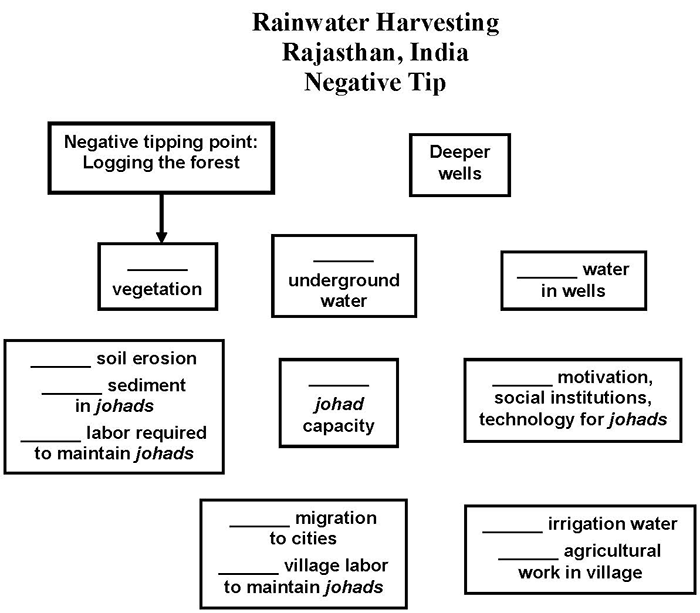
Diagram for students to fill in
Instructions: Fill in the blanks in the boxes, writing “more” to indicate an increase during the story’s period of restoration, or “less” to indicate a decrease during that period. Draw arrows between boxes to show which factors were affecting other factors strongly enough to cause their increase or decrease. There should be at least one arrow pointing away from each box and at least one arrow pointing into each box. Finally, trace circular patterns of the arrows that represent “virtuous cycles” that were set in motion by the positive tipping point and driving restoration.
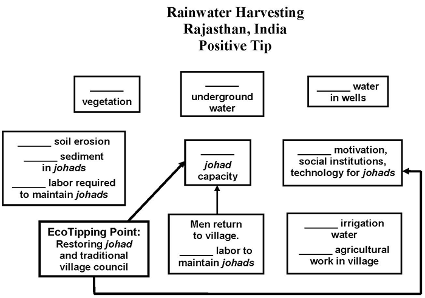
9. Feedback Diagrams: Rajasthan Rainwater Harvesting (Teacher Key)
The negative tipping point in this story was commercial logging concessions granted by the rajahs shortly before India’s independence. A system of vicious cycles was set in motion by the ensuing cascade of effects:
- Logging reduced the quantity of vegetation and the vegetation’s protection of the watershed from soil erosion. Soil erosion and the sediment load in rainwater runoff increased. More sediment was deposited in johad ponds, reducing their capacity to channel water to the aquifer. With less water input to the aquifer, the water table slowly dropped. Trees and other vegetation died when the water table fell beyond reach of their roots. The loss of vegetation led to even more erosion and sediment in the runoff.
- Villagers compensated for the drop in the water table by using tube well technology to dig deeper wells. That lowered the water table even further, forcing the digging of even deeper wells.
- More sediment deposition in the johad required more labor to remove it. This, and the fact that the water supply was shifting to deeper and deeper tube wells, reduced the villagers’ motivation to maintain the johad. As they fell into disrepair, the johad gradually went out of use along with the social institutions and technology for maintaining them.
- Eventually the water table was so low that even the deepest tube wells were drying up. So did the irrigation water necessary for dry-season agriculture. Men moved to cities to find work, leaving villages without the labor supply needed to maintain the johad. This accelerated decline of the johad and depletion of the aquifer even further.
- As can be seen in the “negative tip” diagram, the four vicious cycles listed above were interconnected and mutually reinforcing. The end result was disappearance of the johad and loss of the local water supplies and village forests. Women and children were cast into a nightmare of walking long distances to collect water and fuel wood. Children had no time for school, and women had little time for other family responsibilities and economic activities.
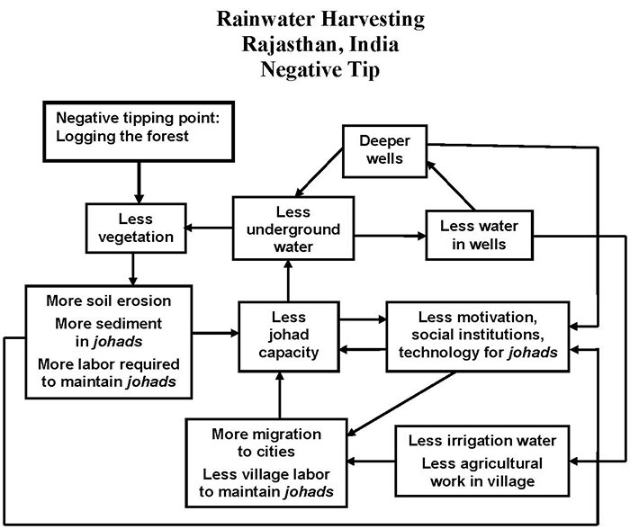
The positive tipping point was the restoration of a single johad in Gopalpura village, along with restoration of the traditional gram sabah village council to manage it. The ensuing cascade of effects eliminated the first vicious cycle in the negative tip (digging deeper and deeper tube wells because the water table was now rising instead of falling. The other three vicious cycles in the negative tip were reversed, transforming those vicious cycles into virtuous cycles:
- Water soon returned to wells near the johad, stimulating the villagers to restore more johad. The technology and social institutions for restoring, maintaining, and building new johad, evolved as more johad were put into service.
- The water table rose, filling more wells and restoring irrigation agriculture. Men moved back to the villages, providing the labor necessary to restore, build, and maintain even more johad.
- With the water table once again close to the surface, the villagers planted trees to restore the village forest. The forest not only provided firewood but also reduced soil erosion, reducing sedimentation of the johad and making them easier to maintain.
- The virtuous cycles continued until all village wells were flowing and the village locked into a sustainable water supply. Women and children no longer had to spend long hours getting water and firewood. Children returned to school and women returned more attention to family and economic activities. A new virtuous cycle was set into motion when people from other villages heard about the success in Gopalpura and came to see what happened. Johad spread to hundreds of villages.
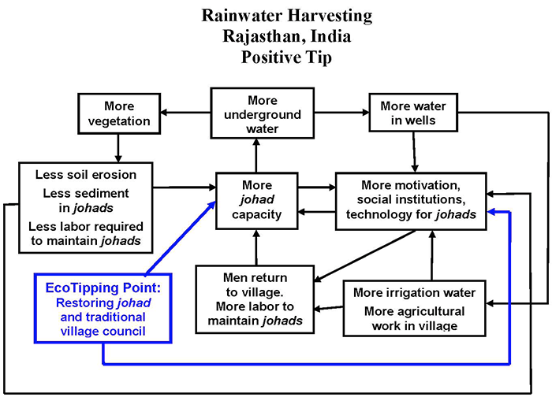
10. Ingredients for Success Powerpoint Preview
Use Previous, Next, or the slide menu to view the presentation.
11. "Student Centered How Success Works" PowerPoint Preview
This PowerPoint file contains photos for this case. Teachers can use it for PowerPoint presentations, and students can use it to create their own presentations as described in Step #10 of “Suggested Procedure” at the top of this page.
Use Previous, Next, or the slide menu to view the presentation.
12. Video:
Water Warriors: Restoring Traditional Earthen Dams for Rainwater Harvesting and Groundwater Replenishment (Rajasthan, India)
- Producer: Damon Wolf
- Download: video-etp-rajasthan.mp4
- Watch this video on YouTube
- Revival of traditional rainwater harvesting dams recharges the aquifer, transforming a drought-ridden landscape.
- Download video script (PDF)